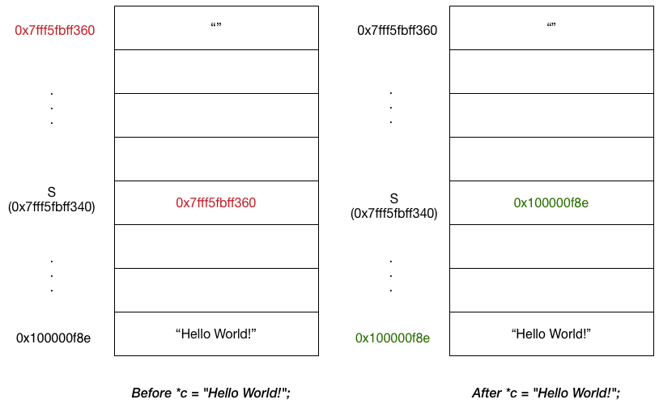

Modify char in another function
Almost two years ago, I write a post on how to
modify an array in one function through another function in C. I did pretty detailed study through GDB there but
I find that the illustration is lengthy to read. In this post, I try to show the same
concept using char *. Hopefully, this time I do a better job.
Problem
We are given the following program:
#include <stdio.h>
// modify this function
void function()
{
}
int main()
{
char* s;
function(); // modify here
puts(s);
return 0;
}
We want to implement function() such that we can print out Hello World! to the screen. The result of
the modification looks like below:
#include <stdio.h>
// modify this function
void function(char** c)
{
*c = "Hello World!";
}
int main()
{
char* s;
function(&s); // modify here
puts(s);
return 0;
}
The question we want to answer is why doing so works?
Explanation
We acquire key data from GDB as following:
| GDB command | result |
|---|---|
p s |
0x7fff5fbff360 "" |
p &s |
(char **) 0x7fff5fbff340 |
p c |
(char **) 0x7fff5fbff340 |
p *c |
0x7fff5fbff360 "" |
p c |
(char **) 0x7fff5fbff340 |
p *c |
0x100000f8e "Hello World!" |
Note that the last two commands are executed after *c = "Hello World!";. The state of the variables on the stack shown below:

Note that one can think about a variable in C as an alias for some virtual memory address. In other words, variable s and address 0x7fff5fbff340
are the same thing and we use variable as a shortcut to reference some address. For a given variable name, we can get its address by using &
(i.e., When & used, the address of that variable is returned, instead of the variable itsef).
In our case, &s is 0x7fff5fbff340. Since s itself is a pointer, which by definition, contains a memory address instead of
a value. In our case, the memory address in s is 0x7fff5fbff360, which contains "" (note that ""
value is undefined. It could be any value).
We pass &s into the function because inside the function, if we modify the content on the address 0x7fff5fbff340 (i.e. represented by &s),
we can still reference 0x7fff5fbff340 once the function exits. It's because we can still access s, and s and 0x7fff5fbff340 are the same thing.
Whatever change made to the content on 0x7fff5fbff340 will be accessible by s as well.
Since s has type char*, then naturally &s corresponds with type char**. Another way of understanding
char** is that we want to change the value of the passed in argument and C, by default, pass the argument
by copying the value. Thus, we need to pass in a pointer to that value, not just the value itself.
Inside the function, we modify the content on the address 0x7fff5fbff340 by deferencing c (i.e. *c), which holds a copy of 0x7fff5fbff340.
After *c = "Hello World!";, the content on the address 0x7fff5fbff340 changed to 0x100000f8e, which contains "Hello World!". Once we are done
with the function and back to main, since s is the alias to 0x7fff5fbff340 and 0x7fff5fbff340 contains address to "Hello World!", our task
is accomplished.
Note
One thought I had when I finished this post was why can't I pass s instead of &s because if s contains some address
(say 0xab) and we modify the content on that address (0xab) to be "Hello World!". Since s contains It seems that there is another option we can use.
However, as pointed out by others, the problem is that s is uninitialized: whatever we do with the address contained in
s is undefined behavior. Undefined behavior means there is no predictability of the program: anything can happen. Thus, even we can print out the string, we still consider doing so wrong.
Hope this short writeup helps!